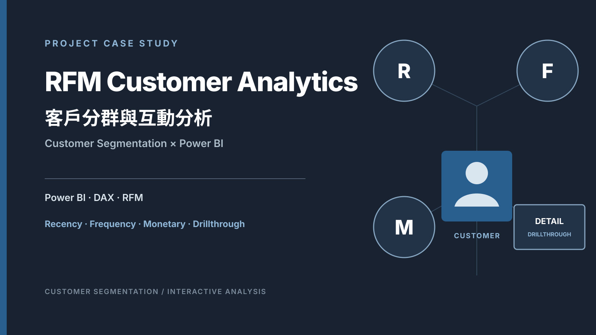

RFM Customer Analytics｜Customer Segmentation × Power BI
RFM Customer Analytics
透過 RFM 架構分析客戶消費行為，並以 Power BI 建立互動式客戶分群與資料探索工具。

Business Question
如何透過 RFM 分析辨識不同客戶價值與消費行為？問題
單看某筆交易，無法同時理解客戶最近一次購買、購買頻率與金額貢獻。這個專案將三個行為面向放入同一個分析架構，再以 Power BI 連結客群總覽與個別客戶明細。
- Recency
- 距離客戶最近一次交易的時間間隔
- Frequency
- 客戶在資料期間內的購買次數
- Monetary
- 客戶的貢獻金額
- Customer Detail
- 如何從客群分析下鑽到個別客戶與交易明細
Data / RFM Method
從三個行為維度建立客戶分群
RRecency · 距今時間間隔
FFrequency · 購買次數
MMonetary · 貢獻金額
SegmentRFM 分類與客戶群體探索
Workflow
從資料模型到客戶下鑽
01資料模型組織客戶、訂單、產品、通路、日期與區域欄位
02RFM 指標建立 Recency、Frequency 與 Monetary 分析欄位
03分類與參數使用 RFM 分類、量值與 R/F/M 參數
04視覺探索透過篩選、分布、散佈圖、樹狀圖與表格查看客群
05CustomerDetail從 RFM 主頁下鑽至個別客戶明細
06Inquiry保留另一個已綁定客戶編號的 Drillthrough 頁面
Power BI Analysis
從 RFM 分群開始，再進入客戶層級的資料探索。Power BI Dashboard
PBIX 實際包含 Home、RFM、CustomerDetail 與 Inquiry 四個頁面。RFM 主頁使用交易月份、區域／居住地、RFM 分類與 R/F/M 參數進行互動式探索。
- Home
- 專案入口視覺
- RFM
- 客戶分類、R/F/M 分布、散佈圖、樹狀圖、區域矩陣與客戶清單
- CustomerDetail
- 個別客戶屬性、訂單、產品與交易指標明細
- Inquiry
- 實際存在的隱藏 Drillthrough 頁面
Customer Drillthrough
From segment to customer.CustomerDetail 與 Inquiry 在閱讀模式中隱藏，作為客戶層級的下鑽頁面。
從客群分析到個別客戶
RFM 主頁具有「顯示客戶詳細資料」Drillthrough 按鈕，實際連向 CustomerDetail，並以客戶編號作為篩選條件。
使用者可繼續查看客戶基本屬性、月份購買次數與貢獻金額、產品大分類，以及訂單、產品、數量、成本、金額、毛利與毛利率明細。
Inquiry
Inquiry 也是 PBIX 中已存在的 Drillthrough 頁面，並綁定客戶編號；本頁不延伸其他未確認用途。
Takeaway
從整體客群分析到個別客戶探索
這個專案將 RFM 客戶分群方法與 Power BI 互動式分析結合，讓使用者能從整體客群進一步探索個別客戶。
RFM將距今時間、購買次數與貢獻金額納入同一架構
Interactive透過篩選、參數與多種視覺探索客戶分類
DrillthroughCustomerDetail 與 Inquiry 保留客戶層級的查看路徑
Boundary未提供 campaign uplift、營收提升、ROI 或商業導入結果